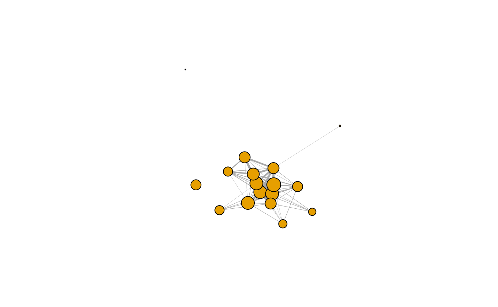

Before starting with network simulations, SimuNet needs networks (e.g. from real-life) to “inspire” its internal simulation probabilities. The approach is described in the article on the underlying Bayesian framework, and is described “code-wise” in the draw_edgeProb()’s doc.
SimuNetrequires two types of data:
Adj: matrix of the number of times (integers) two nodes have been observed associating or interactingsamp.effort: number of times the edges haVe been sampled to observe Adj
A user willing to run simulations with SimuNet will import an Adj matrix and samp.effort.
Care regarding the mode of Adj - in the igraph sense (see igraph::graph.adjacency()) - is also required. In short, igraph defines the modes:
"directed" for directed networks (asymmetrical matrices) where \(Adj[i,j] = 1\) does not have the same meaning as \(Adj[j,i] = 1\)
"undirected" for undirected networks (symmetrical matrices) where \(Adj[i,j] = 1\) has the same meaning as \(Adj[j,i] = 1\).igraph actually includes multiple approaches to build undirected networks when an asymmetrical matrix is inputted:
"max", which takes the \(max(Adj[i,j],Adj[j,i])\) for both edges. This is actually the mode used when mode = "undirected"
"min", which takes the \(max(Adj[i,j],Adj[j,i])\) for both edges"plus", which takes \(Adj[i,j] + Adj[j,i]\) for both edges"upper", for upper-triangular matrices"lower", for lower-triangular matricesFor unambiguous undirected networks, we recommend using triangular matrices (mode = "upper" or mode = "upper").
Adj and samp.effort
Any methods leading to such a square integer matrix - triangular or not - is suitable as Adj. For samp.effort, simply assign an integer to a variable.
Adj matrix and samp.effort:
library(SimuNet)
set.seed(42)
# for a random directed matrix
n <- 5L
nodes <- letters[1:n]
samp.effort <- runif(1,0,100) |> round()
Adj <- matrix(data = 0L,nrow = n,
ncol = n,
dimnames = list(nodes,nodes)
)
Adj[non.diagonal(Adj)] <- runif(n * (n - 1),0,samp.effort) |> round()
Adj # note that the suitable `mode` here would be "directed"
#> a b c d e
#> a 0 47 64 23 11
#> b 85 0 42 42 43
#> c 26 67 0 86 51
#> d 76 12 65 0 82
#> e 58 60 85 89 0
samp.effort
#> [1] 91from real-life observations:
# input data manually...
Adj <- matrix(c( 0,12,34,56,78,
0, 0,23,45,67,
0, 0, 0,34,56,
0, 0, 0, 0,45,
0, 0, 0, 0, 0),
ncol = 5,byrow = TRUE,
dimnames = list(1:5,1:5)
)
samp.effort <- 100L
Adj # note that the suitable `mode` here would be "upper"
#> 1 2 3 4 5
#> 1 0 12 34 56 78
#> 2 0 0 23 45 67
#> 3 0 0 0 34 56
#> 4 0 0 0 0 45
#> 5 0 0 0 0 0
samp.effort
#> [1] 100
# ... or import a matrix using your favorite method (e.g. read.csv)Or with such data from the literature
Our last example represented a social network of a group of kangaroo, the weights of which representing how many times each pair of kangaroos was observed in association, after 241 observations, or "scans".
The user can reconstruct an igraph network (or graph) object from igraph::graph.adjacency(), but SimuNet’s import_from_asnr() can also output igraph object directly by specifying the output (among "graph" and "adjacency", with support for partial matching)
From there, it is easy to plot a visualization of the network:
# from Adj...
G <- igraph::graph.adjacency(Adj,mode = "lower",weighted = TRUE)
# ... or directly imported
G <- import_from_asnr("Mammalia",
"kangaroo_proximity_weighted",
output = "graph",type = "lower")
G.deg <- igraph::degree(G)
G.E <- igraph::E(G)$weight
plot(G,
vertex.size = G.deg * 1.2,
vertex.label = NA,
edge.width = 15 * (G.E - min(G.E)) /
(max(G.E) - min(G.E))
)
The conversion can be achieve the other-way around:
G.Adj <- igraph::get.adjacency(G,type = "lower",attr = "weight")
G.Adj
#> 17 x 17 sparse Matrix of class "dgCMatrix"
#> [[ suppressing 17 column names '1', '2', '3' ... ]]
#>
#> 1 . . . . . . . . . . . . . . . . .
#> 2 21 . . . . . . . . . . . . . . . .
#> 3 10 9 . . . . . . . . . . . . . . .
#> 4 45 19 8 . . . . . . . . . . . . . .
#> 5 54 20 10 45 . . . . . . . . . . . . .
#> 6 7 3 3 7 6 . . . . . . . . . . . .
#> 7 16 9 5 17 17 4 . . . . . . . . . . .
#> 8 1 1 1 1 1 1 1 . . . . . . . . . .
#> 9 3 10 9 1 3 2 . 1 . . . . . . . . .
#> 10 4 4 4 3 4 2 . 1 6 . . . . . . . .
#> 11 7 11 10 6 6 3 5 1 9 8 . . . . . . .
#> 12 3 2 . 3 1 3 3 1 1 1 1 . . . . . .
#> 13 2 2 . 2 2 3 1 . . . 2 . . . . . .
#> 14 3 2 . 3 3 1 3 . . . . . 1 . . . .
#> 15 3 6 3 4 3 4 3 . 2 . 5 . 3 1 . . .
#> 16 . . 2 . 1 . . . . . . . . . . . .
#> 17 . . . . . . . . 1 . . . . . . . .
identical(G.Adj |> as.matrix(),Adj)
#> [1] TRUE